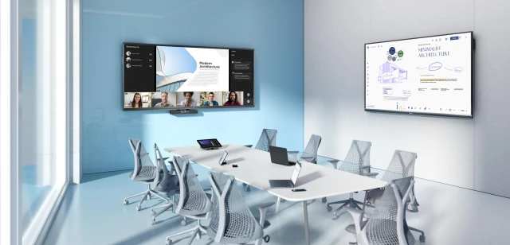

Stackly helps teams plan meetings, share ideas, and collaborate faster with powerful communication tools built for modern workplaces.
Stackly provides powerful productivity features that help teams organize tasks, track progress, and stay focused on important work.

Create dedicated spaces where teams can organize discussions, files, and tasks.
Assign responsibilities and track progress so every team member stays aligned.
Capture ideas, decisions, and action items during meetings in one shared place.
Understand team activity with simple analytics and collaboration reports.
Stackly helps teams stay organized, communicate faster, and complete work without unnecessary meetings.
Start meetings instantly with a single link and bring your team together in seconds.
Keep everyone on the same page by sharing ideas, feedback, and updates in real time.
Structure discussions and files so teams can find information quickly.
Stackly removes the complexity from team communication by bringing messages, meetings, and collaboration tools into one seamless platform.
Keep all team conversations organized in one place instead of switching between apps.
Run structured meetings and reach decisions quickly with your entire team aligned.
Track discussions, meeting notes, and updates so everyone knows what comes next.
Stackly combines communication, organization, and collaboration tools so teams can manage work without switching between multiple platforms.
Stackly helps teams replace scattered tools and unorganized meetings with a single streamlined collaboration platform.